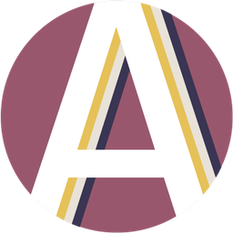

HomeAuction
Локальный сервер и публичный доступ
ЛОКАЛЬНЫЙ ДОСТУП
Запускается
Сервер
Ожидание свободного порта…
Подключение для игроков в одной локальной сети.
ВРЕМЕННЫЙ ПУБЛИЧНЫЙ АДРЕС
Остановлен
Cloudflare Tunnel
Адрес появится после подключения
ПОСЛЕДНИЕ 200 СТРОК
Журнал
Запуск приложения…